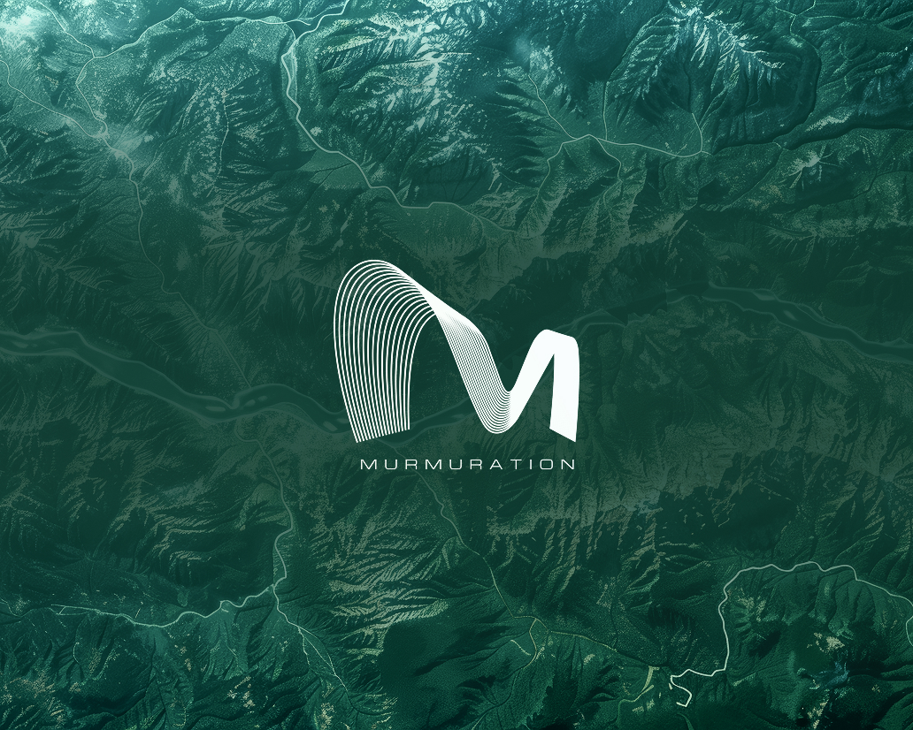

Murmuration SAS | 2023 - 2026
UI/UX Designer
At Murmuration, I worked on several internal tools and dashboards, focusing on improving usability and consistency through thoughtful design systems and user-centered research.
- Designed and maintained the design system for internal dashboards.
- Redesigned the visual identity and brand guidelines.
- Conducted user research and created proto-personas to guide design decisions.
- Produced high-fidelity mockups and interactive prototypes for web interfaces.
- Collaborated with the dataviz front-end team to integrate new designs.
- Worked closely with developers on data-driven environmental dashboards.